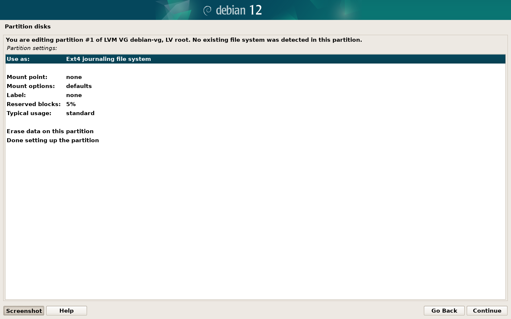

Installing Debian Trixie on Lenovo ThinkPad X13s
This guide provides step-by-step instructions on how to install Debian Trixie with no prior knowledge required. While it looks a little long, it covers every step you need to go through to have a working, encrypted Debian installation and not kill Windows during the installation. The whole process should take around 1 hour of your time (not counting the time to create the recovery drive and download everything).
While most of the parts of this guide are similar to the normal Debian installation, some of the ThinkPad specific workarounds may change in the future. If you have any doubs it may be good to take a look at Debian Wiki Page.
Disclaimer
While every effort has been made to accurately describe a safe installation process and the risk of losing your existing data is low, it is recommended to backup your important files on a different device in case of any failures during the process.
Preparation
Currently it is recommended to keep the existing Windows installation, as it’s the only way to use all of the device’s features (and it may be necessary to use it in the future for firmware updates). Because of that we need some preparation before installing Debian.
To complete this guide you will need two USB drives with at least 1GB and 32GB of capacity.
Make sure that your AC power adapter is connected, as the power loss during a few steps may result in data loss.
Free-up disk space
Resizing partitions later is less convenient, so make sure you have enough free space on your disk before proceeding. 50GB should be enough just to try Debian, but if you want to use it daily reclaim as much space as possible.
Upgrade system firmware
Go to the Drivers & Software section of Lenovo’s website and download the latest BIOS Update Utility.
After installing the downloaded binary, ThinkPad BIOS Flash Update Utility will open automatically.


Proceed through the steps. Answer No to the Would you like to update the machine model?.
During the upgrade the ThinkPad will reboot.
Create Windows Recovery Disk
Currently it is not possible to download Windows 11 for ARM image from Microsoft, so the only way to reinstall it in case anything goes wrong is by using a recovery disk.
Before continuing unplug all external drives.
Open the start menu, type “recovery drive” and open the Recovery Media Creator tool. Make sure that Back up system files to the recovery drive. is selected and proceed:
Plug in the 32GBs USB drive, select it, press Next, Create and wait for it to finish (it may take an hour).
Note: all data on this drive will be deleted.
Disable BitLocker
By default ThinkPad encrypts your files using Windows BitLocker. It is recommended to disable it, because we will need to also disable the Secure Boot later in order to boot Debian. With the BitLocker still enabled, you would have to type in a 48 digit password each time you boot into Windows. Alternatively if you really want to keep it on, make sure that your recovery keys are backed up on a different device and shrink the Windows partition before proceeding.
Note: from this moment files on your Windows partition will no longer be encrypted and they could become accessible by anyone with access to your laptop.
To disable it, open the start menu, type “bitlocker” and open Manage BitLocker tool:
Press Turn off BitLocker and wait for the “BitLocker Decrypting” to change to “BitLocker off”. You may check the progress by opening the notification that popped up. It may take some time if you have a lot of files on your drive.
Store Wi-Fi and Bluetooth mac addresses
As the physical addresses of your Wi-Fi and Bluetooth cards cannot be read by Linux kernel (yet), you will need to note them now to restore them under Debian.
Right-click on the Start menu and open Terminal (Admin).
Run (type in the command and press enter): ipconfig /all
You should receive output similar to this:
Note the two highlighted addresses on a different media or a sheet of paper. Don’t close the terminal as it will be needed in the next step.
Install the Device Tree on the EFI System Partition
Download the file pointed by this link (right click -> save as): https://d-i.debian.org/daily-images/arm64/daily/device-tree/qcom/sc8280xp-lenovo-thinkpad-x13s.dtb
With the terminal still open type diskpart.exe and press enter. When diskpart opens, type list volume and press enter. It will list available volumes that look similar to this:
Look at the volumes and find the number of the one with Label SYSTEM and Fs FAT32. As highlighted in this case it’s number 1.
Run select volume 1 (or a different number you found) and then run assign.
You should now see a new drive in This PC view called SYSTEM and the letter assigned to it, in this case it’s D:
Go back to the Command Line, and run exit to close the DiskPart.
To verify that the correct partition was selected type run ls D: (or a different letter if that’s your case). The partition should contain EFI directory:

Now copy the downloaded device tree by running:
cp .\Downloads\sc8280xp-lenovo-thinkpad-x13s.dtb D:\
And verify that file was copied by running ls D: again:
Prepare USB stick for installation
Download the daily netinst image of Debian and Rufus.
Plug in your second USB drive and open Rufus. Select your USB drive and the downloaded Debian image. You don’t need to change any default settings. It should look similar to this:
Note: all data on this drive will be deleted.
Press START, then read and accept the pop-ups to flash. Again, default settings should not be changed.
After flashing finishes, shutdown Windows and keep the USB drive plugged in.
Configure the BIOS
Reboot your ThinkPad and when you see the Lenovo logo on boot press F1 to enter the BIOS. It will look like this:
Click on the Config section on the left, and then Linux:
Then turn on Linux Boot option:
Go back to the Security section and into the Secure Boot configuration:

Disable the Secure Boot:

Go back to the Restart section and select Exit Saving changes. Your laptop will now reboot.

Installation
Boot Debian Installer
Make sure that the USB stick with Debian image is plugged in. Turn your laptop off and on again. When you see the Lenovo logo press F12 to select booting from the USB.
You should see the choice of USB-HDD with the name of your drive, in this case Samsung Type-C. Select it.
Note: If your USB drive doesn’t show up, hold down the power button for 10 seconds to shutdown, remove and insert your USB stick and try again.
You will be greeted with a blue GRUB’s screen:

Use arrow keys to highlight the Graphical install option and press “e”. You will see a text editor. Using arrow keys move the cursor to the end of the line starting with linux:

Replace the word quiet with arm64.nopauth

Finally, press Ctrl + X to boot the installer.
First steps
If the font is too small, you can increase it by pressing Ctrl+, which is Ctrl + Shift + "+/= key" a few times. To decrease it press Ctrl -
Follow the installation steps as below until you reach the Partition disks section:
- Select your language and region.
- Select your Wi-Fi network, encryption type (most likely WPA/WPA2) and password.
- Type in the hostname according to your preferences - for example DebianX13s. If you don’t know what it’s for, you can skip setting up the domain name.
- Set up your root password.
- Set up your full user name, short username and it’s password
Disk partitioning
After reaching Partition disks section, select Manual in order to shrink Windows Partition and configure encrypted LVM module for Debian:
Resize Windows
Depending on your SSD model and size, you will see a list similar to this. Windows partition will likely be the biggest ntfs volume on your drive. Select it and press continue.

Select Resize the partition and press continue. If you’re asked about writing previous changes, select Yes and continue:

You will see how much space can be reclaimed. Leave at least 20GB above minimum so the system can be usable later:

Create boot partition
After resizing is done, you will see a FREE SPACE after the Windows partition. Select it and then select Create a new partition:

Set its size to 512MB and the location for the new partition at the beginning:

In the partition configuration menu select Mount point to /boot. The final configuration should look like this:

Then select Done setting up the partition.
Create encrypted volume
After the boot partition is created, your partition list should look as below. Now select Configure encrypted volumes:
You will be asked again to write the changes to the disk. Select Yes.
Choose Create encrypted volumes and select the largest FREE SPACE section on your disk:

In the next step don’t change any default settings. Simply select Done setting up the partition.
You will be asked again to write the changes to the disk. Select Yes.
As the encrypted volume is now created, select Finish.
You will be asked if you want to securely erase the created volume. If you are unsure what to choose, select yes and wait for the process to finish. Depending on the size of your disk it may take a while (coffee break recommended):
After erasing is finished, you will be asked to provide the disk encryption password (make it strong):

Configuring the LVM
After creating encrypted volume, your disk partitions should look like below. Select Configure the Logical Volume Manager:
You will be asked again to write changes to the disk. Select Yes.
Now we see an empty LVM configuration. Select Create volume group and call it for example debian-vg:


Select the encrypted volume to use it in volume group:
Now in the main LVM configuration menu you will see 1 used physical volume. Let’s create two logical volumes: one will be used as a swap and the other to store system and files.
Select Create logical volume and use debian-vg group:


We will call first LVM volume swap and we will allocate 4GB of disk space for it. If your Thinkpad is equipped with 8GB of RAM, you may want to increase it to 8GB:
Now create a second logical volume called root allocating the rest of space for it (it should be pre-filled).

After both logical volumes are created, you may choose Display configuration details to verify that both volumes are correctly allocated:
If that’s the case, select Finish and go back to the disk partitioning view.
Assign mount points for root and swap partitions
After LVM configuration is done, the partition list should look like below. Select the partition under LV root to configure it:

Change Use as: from do not use to the Ext4 journaling file system:


Then change the Mount point from none to / - the root file system. After changing it should look like below. Select Done setting up the partition and continue.

Now enter the partition under LV swap and change Use as from do not use to swap area:
Select Done setting up the partition and continue.
The final disk configuration will look like below. Select Finish partitioning and write changes to disk and continue.

You will be asked again to write changes to the disk. Select Yes.
System installation
Wait for the installer to install the base system. In the next steps:
- Configure the package manager based on your location and configure the proxy (if you use one).
- Installer will then download and install other missing packages.
- Configure the popularity contest aka. anonymous data collection according to your preferences.
- Make sure to select
Debian desktop environmentor any other GUI that you prefer:

and wait for installation to finish…
You will be asked whether to force GRUB installation to the EFI removable media path and to Update NVRAM variables. Select Yes in both cases and continue.
Final steps
Wait until you see Installation complete screen as below:

Press Ctrl + Alt + Fn + F2, then press enter to activate the console:

Add initramfs modules
Run in the following command in the console to edit the modules file:
nano /target/etc/initramfs-tools/modules
A text editor will open. Add the following lines to the end of the file:
leds_qcom_lpg
qrtr
pmic_glink_altmode
gpio_sbu_mux
qnoc-sc8280xp
It should look like this:

Press Ctrl + x to exit the editor, then press y and enter to save the file.
To apply the config we modified run the following command:
in-target update-initramfs -u -k all
Install missing packages
There are few packages that are necessary to use the ThinkPad, but they are not installed by default so let’s do that manually by running the command:
in-target apt install -y firmware-qcom-soc protection-domain-mapper qrtr-tools acpi
Now go back to the graphical interface by pressing Ctrl + Alt + Fn + F5 and press continue to reboot.
First boot
Upon the next boot, when you see the Lenovo logo, press F12 and manually select booting from NVMe drive. You will see a blue screen, wait for 5 seconds and the system will boot next time into Debian. This step is needed only once.

Post installation fixes
After you successfully booted and logged into Debian, there are two more fixes we need to apply.
Fix Wi-Fi and Bluetooth mac addresses
In this step we will use mac addresses noted on Windows.
Click on the Activities in the top right corner (or press a Windows key), type in terminal and open it.
Run the su command to became a superuser. You will need to enter the root password that you set during installation.
Create udev rules file by opening it in nano:
nano /etc/udev/rules.d/99-fix_mac_addresses.rules

Copy and paste the following content to the file. Replace XX:XX:XX:XX:XX:XX with the Wi-Fi mac address noted on Windows (also replace - with :).
ACTION=="add", SUBSYSTEM=="net", KERNELS=="0006:01:00.0", \
RUN+="/usr/sbin/ip link set dev wlP6p1s0 address XX:XX:XX:XX:XX:XX"
ACTION=="add", SUBSYSTEM=="bluetooth", ENV{DEVTYPE}=="host" \
ENV{DEVPATH}=="*/serial[0-9]*/serial[0-9]*/bluetooth/hci[0-9]*", \
TAG+="systemd", ENV{SYSTEMD_WANTS}="hci-btaddress@%k.service"

Press Ctrl + x and then press y and enter to save the changes.
Run the next command to create systemd service for bluetooth:
nano /lib/systemd/system/hci-btaddress@.service
Copy and paste the following content to the file. Replace XX:XX:XX:XX:XX:XX with the Bluetooth mac address noted on Windows (also replace - with :).
[Unit]
Description=HCI bluetooth address fix
[Service]
Type=simple
ExecStart=/bin/sh -c 'sleep 5 && yes | btmgmt -i %I public-addr XX:XX:XX:XX:XX:XX'

Press Ctrl + x and then press y and enter to save the changes.
Run systemctl daemon-reload to update the systemd config. Changes will take place after a reboot, but we can do it after the next step.
Fix USB throughput and improve power efficiency
Edit a grub config file by running:
nano /etc/default/grub
You should now see a file looking like this:
Go down to the line starting with GRUB_CMDLINE_LINUX_DEFAULT and modify the value in quotation marks so it looks like this:
GRUB_CMDLINE_LINUX_DEFAULT="iommu.passthrough=0 iommu.strict=0 pcie_aspm.policy=powersupersave quiet"
You can also add a word splash there, to have a nice looking screen when typing disk decryption password instead of a text mode. In the end it should look like this:

Press Ctrl + X` and then press y and enter to save the changes.
To apply the changes to the GRUB config run the two commands:
export PATH=/sbin:$PATH
update-grub
Now you can reboot your ThinkPad to apply all the changes. Enjoy!